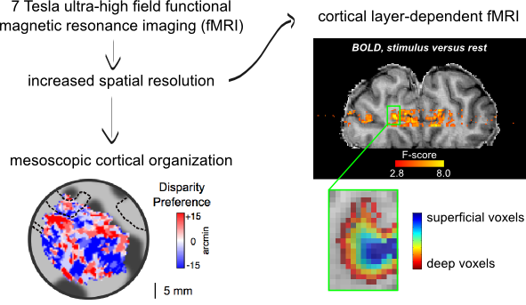
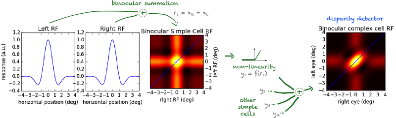

Nuno Gonçalves
Stereopsis
You are currently capturing two images of your computer screen - one via the right eye and another via the left eye. However, you are perceiving a single visual experience. How does your brain achieve this? One day I would like to answer that question.

Increasing specificity in human experimentation
Data collected in human subjects is usually limited in temporal and spatial resolution. I work with methods that push the limits of resolution to gain more detailed insights into human brain function.

Computations in the brain
I am actively investigating the computations that may underlie depth estimation from binocular disparity. Soon I will be posting more details here.

copyright © Nuno Gonçalves